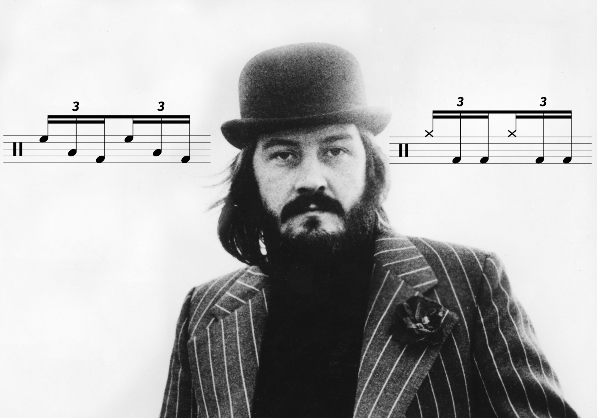

Tagged: Rant & Raves
What’s the Deal With “Bonham Triplets”?
Posted on April 17, 2022
(Review: Roll Review… try saying that five times fast!)
I’m a little bit late to the party on this one, but drummers are still as confused as ever regarding this topic, so here goes.
After getting into Led Zeppelin back in high school and learning about John Bonham, I became familiar with one of Bonham’s signature licks — “The Bonham Triplet”. Read More . . .
Drums Don’t Play Actual Pitches. And Even if They Could, Why Would You Want Them To?
Posted on February 20, 2022

I’m starting to wonder if drummers are on a misguided quest to try and get their instrument to be taken more seriously. I think the metric modulation nonsense that I often complain about is part of this; other instruments get to talk about advanced harmony, so I get the appeal… but you just end up looking silly to non–drummers.
There’s another topic I want to look at in the same vein: tuning drums to notes. Like many problems in this day and age, the internet is partly to blame. Case in point: my inspiration to write this comes from a Reddit thread that was started this past week. As always, I chimed in on the thread and will expand upon my thoughts here. Read More . . .
How To Get Started On The Drums
Posted on January 23, 2022

Without a doubt, this is the number one question asked in internet drumming circles. Anyone who asks how to get started on the drums is guaranteed to get at least a few responses, so I’ve never bothered chiming in. I always figured that full–time teachers would be best at responding since they have to routinely get beginners up to speed. But I do have some thoughts to share, and despite my desire to see different topics brought up online, the burden is ultimately on me to come up with stuff to talk about. So let’s go through some pointers. Read More . . .
Do Drummers Worry Too Much About Chops? Or Do They Not Worry Enough?
Posted on January 9, 2022

Who wouldn’t want to kick off the new year with a rant and a rave?
A few days after Christmas, a pretty innocuous thread was started on r/drums asking an age-old question: “you sit down on a drum set — what do you start playing?”. I left my go–to answer: “Squib Cakes” by Tower of Power, although some of Steve Gadd’s fills from the Chick Corea tune “Nite Sprite” would be another possibility. Read More . . .
Wrapping up 2021
Posted on January 2, 2022

I made one of these posts last year, so I figured that I would make another one for 2021. Maybe this will become an annual thing for me, but I suppose that’s dependent on how eventful my life is year to year. Read More . . .
The Enduring Confusion Around High Sample Rates
Posted on November 28, 2021

Now that I’m the proprietor of a(n admittedly humble) home studio, I like to think that I’ve really come to terms with the nuts and bolts of music technology. But the truth is, I still have a lot to learn, as mastering even a single effect like compression can take some time.
There are other topics that some people think are best left undiscussed. I’ve really gone on a deep dive in the last couple of months trying to make sense of sample rates, particularly the case for using a high sample rate. Read More . . .
Unpopular Opinions (Part 2)
Posted on October 17, 2021
So, a few weeks ago, just as I was talking about how hard it can be to write about drums, Reddit blessed me with a thread that’s chock full of material to discuss.
The thread came from r/drums and was titled “Whats a drumming hill you're willing to die on?”. Read More . . .
Dealing With a Bit of Writer’s Block
Posted on October 8, 2021

A few weeks ago, I fell victim to an unexpected loss of motivation to get a post out. For some reason, I just didn’t feel like writing about anything. The following week I eventually got something together, but it was really a struggle.
I’m starting to fly by the seat of my pants a little bit with regards to keeping the blog updated. Before I launched the site, I had a few dozen transcriptions that were already done or at least a good chunk of the way done. Sharing the sheet music I’ve created was really the impetus behind this whole thing. Read More . . .
First EP — Lessons Learned
Posted on May 30, 2021

Sorry for my recent unannounced absence — I missed last week’s post after receiving an inoculation last Wednesday that promptly knocked me on my butt for a few days. Once I got over that, it was crunch time for my band’s EP. The last step we had to take was artwork, which ended up falling to me. And with the prospect of pushing this release back again, I had to cook something up in a timely manner.
But now I can announce that the Natural Born Killer EP has been sent to our distributor, and is on its way to streaming services. At long last, the nightmare is over… on to the next one! After two years on this project, I want to write a bit about the process, since this is the first studio project that I (and my bandmates) we ever a part of, and… we really did a lot of things wrong. So let’s go through it all. Read More . . .
An Honest Look at the Rudiments
Posted on May 16, 2021

Earlier this week, someone posted on r/drumming asking about the rudiments. I chimed in on the thread but I feel like expanding on my thoughts more here, since I have yet to talk at length about the rudiments (and there’s a lot to talk about). The OP was specifically asking about what is and isn’t a rudiment (i.e. why is this lick a rudiment, but not that one). Read More . . .
Unpopular Opinions
Posted on February 7, 2021

So, a few weeks ago, someone on r/drums started a thread basically asking about unpopular drum opinions. I couldn’t help myself, and I left quite a lengthy comment, since I find myself disagreeing with most of what happens on the internet with regards to drumming.
My comment ended up being at the top of the thread, becoming the most popular thing I’ve ever done on the site, with a whopping 29 upvotes. Read More . . .
Wrapping Up 2020
Posted on January 1, 2021

Now that the new year is upon us, it’s time to wrap up the last 12 godforsaken months. I can’t say I have very high hopes for 2021, but in the meantime, I guess I should take some inventory.
For one, I graduated college this past May. At long last, I officially have one major, two minors, and a certificate to my name. It was a bummer I didn’t any sort of commencement (not like I really cared), but hey, now I have a diploma. Read More . . .
Rant: Thoughts on Buddy Rich
Posted on December 20, 2020

When I took my deep dive into the ’89 Buddy Rich Memorial Concert, I had to watch most of it on YouTube before I got my hands on my own copy (which is much too difficult — shame on you Alfred!). Of course, I often wandered into the comments section on these videos, and amongst all the praise for these great drummers I started noticing comments that were… a little dismissive. Read More . . .
Rant: Drum Solos
Posted on December 13, 2020

So it’s time to distill my thoughts from the Memorial Concert posts. The first thing I want to talk about concerns drum solos, since I originally wanted to share a solo from each drummer. I had to can an audible partway through this project, when I realized that notating six solos was not gonna happen. Read More . . .
Transcription: “Story” — Brian Evans with Chon + A rant about music theory
Posted on October 4, 2020

This has been kicking around in my drafts folder for almost exactly one year — I guess now is as good of a time as any to share it with the world. So, last October I saw a post over on r/Drums where somebody asked about the Chon track “Story” off of their 2015 debut. The poster was asking about what was going on at the end of the tune, around the 3:10 mark. Read More . . .